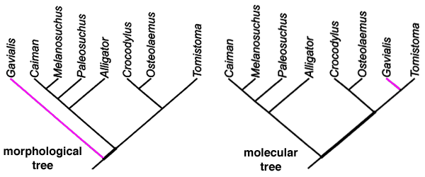

Sommaire
Le tableau ci-dessous et la calculatrice JavaScript qui le suit fournissent des valeurs pour la signification statistique d'une correspondance entre deux arbres phylogénétiques incongruents, rapportées sous forme de valeurs de P. Ces valeurs de P donnent la probabilité que deux arbres bifurquants enracinés, avec un nombre donné (ou moins) de branches discordantes, correspondent par hasard.
Le nombre de branches incongruentes est déterminé par rapport au sous-arbre d'accord maximal (MAST) entre deux arbres. Un MAST est le sous-arbre « cœur » commun entre deux arbres. Le nombre de branches incongruentes est égal au nombre minimum de branches qui doivent être élaguées à partir de l'un des arbres réels pour obtenir le MAST. Un exemple tiré de l'analyse de John Harshman concernant les espèces de crocodiles est donné dans la figure ci-dessous (Harshman et al. 2003).
|
 Deux phylogénies de crocodiliens incongruentes. L'arbre de gauche est basé sur des données morphologiques ; l'arbre de droite sur la séquence moléculaire du proto-oncogène c-myc (Harshman et al. 2003). Le MAST commun est représenté en noir. Selon la métrique de distance décrite ci-dessus, la distance entre les deux arbres est d'une branche, en raison de la branche de Gavialis mal placée indiquée en magenta. La signification de la concordance entre ces deux phylogénies incongruentes est P ≤ 0,00077. De plus, Harshman et al. ont réalisé une analyse phylogénétique indépendante avec des gènes mitochondriaux, qui a donné exactement le même arbre que les données du proto-oncogène c-myc. La signification globale pour ces trois arbres indépendants est P ≤ 7,4 × 10-8. |
Dans le tableau ci-dessous, les lignes listent des valeurs pour une comparaison de deux arbres avec un nombre croissant de taxons. Les colonnes listent la signification pour un nombre donné de différences entre les deux arbres. L'incongruence de « 1 adjacent » fait référence au cas où une branche est mal placée par seulement un nœud adjacent (c'est-à-dire que deux branches voisines sont échangées par rapport à l'autre arbre). Les colonnes restantes étiquetées de 1 à 10 font référence au cas où x branches ou moins sont mal placées n'importe où dans l'arbre. Une signification statistique élevée (P < 0,01, ou supérieure à 99 % de confiance) est indiquée par du bleu clair. Une signification statistique (P < 0,05, ou supérieure à 95 % de confiance) est indiquée par du rose. Les valeurs ambiguës (0,05 < P < 0,50) sont indiquées par du blanc. Les valeurs hautement insignifiantes (P > 0,50) sont indiquées par du rouge, et les valeurs impossibles sont colorées en noir.
| Nombre de taxons | Valeur P-maximale pour deux arbres incongruents par nombre donné de branches : | |||||||||||
|---|---|---|---|---|---|---|---|---|---|---|---|---|
| exactement congruent | 1 adjacent | 1 | 2 | 3 | 4 | 5 | 6 | 7 | 8 | 9 | 10 | |
| 4 | 0,067 | 0,20 | 1,00 | 1,00 | 1,00 | 1,00 | 1,00 | 1,00 | 1,00 | 1,00 | 1,00 | 1,00 |
| 5 | 0.0095 | 0.038 | 0.28 | 1.00 | 1.00 | 1.00 | 1.00 | 1.00 | 1.00 | 1.00 | 1.00 | 1.00 |
| 6 | 0.0011 | 0.0052 | 0.050 | 0.97 | 1.00 | 1.00 | 1.00 | 1.00 | 1.00 | 1.00 | 1.00 | |
| 7 | 9.6 x 10-5 | 5.8 x 10-4 | 0.0067 | 0.20 | 1.00 | 1.00 | 1.00 | 1.00 | 1.00 | 1.00 | 1.00 | 1.00 |
| 8 | 7.4 x 10-6 | 5.2 x 10-5 | 6.8 x 10-4 | 0.030 | 0.53 | 1.00 | 1.00 | 1.00 | 1.00 | 1.00 | 1.00 | 1.00 |
| 9 | 4.9 x 10-7 | 3.9 x 10-6 | 6.2 x 10-5 | 0.0035 | 0.089 | 1.00 | 1.00 | 1.00 | 1.00 | 1.00 | 1.00 | 1.00 |
| 10 | 2.9 x 10-8 | 2.6 x 10-7 | 4.6 x 10-6 | 3.3 x 10-4 | 0.012 | 0.22 | 1.00 | 1.00 | 1.00 | 1.00 | 1.00 | 1.00 |
| 11 | 1.5 x 10-9 | 1.5 x 10-8 | 3.0 x 10-7 | 2.7 x 10-5 | 0.0012 | 0.032 | 0.49 | 1.00 | 1.00 | 1.00 | 1.00 | 1.00 |
| 12 | 7.2 x 10-11 | 8.0 x 10-10 | 1.8 x 10-8 | 1.9 x 10-6 | 1.1 x 10-4 | 0.0037 | 0.076 | 0.98 | 1.00 | 1.00 | 1.00 | 1.00 |
| 13 | 3.1 x 10-12 | 3.8 x 10-11 | 9.1 x 10-10 | 1.2 x 10-7 | 8.3 x 10-6 | 3.5 x 10-4 | 0.0095 | 0.17 | 1.00 | 1.00 | 1.00 | 1.00 |
| 14 | 1.2 x 10-13 | 1.6 x 10-12 | 4.3 x 10-11 | 6.6 x 10-9 | 5.6 x 10-7 | 2.9 x 10-5 | 9.9 x 10-4 | 0.022 | 0.33 | 1.00 | 1.00 | 1.00 |
| 15 | 4.6 x 10-15 | 6.6 x 10-14 | 1.8 x 10-12 | 3.3 x 10-10 | 3.3 x 10-8 | 2.1 x 10-6 | 8.7 x 10-5 | 0.0025 | 0.048 | 0.62 | 1.00 | 1.00 |
| 16 | 1.6 x 10-16 | 2.4 x 10-15 | 5.6 x 10-14 | 1.5 x 10-11 | 1.8 x 10-9 | 1.3 x 10-7 | 6.7 x 10-6 | 2.3 x 10-4 | 0.0056 | 0.095 | 1.00 | 1.00 |
| 17 | 5.2 x 10-18 | 8.3 x 10-17 | 2.1 x 10-15 | 6.4 x 10-13 | 8.6 x 10-11 | 7.5 x 10-9 | 4.5 x 10-7 | 1.9 x 10-5 | 5.6 x 10-4 | 0.012 | 0.18 | 1.00 |
| 18 | 1.5 x 10-19 | 2.7 x 10-18 | 7.4 x 10-17 | 2.5 x 10-14 | 3.8 x 10-12 | 3.9 x 10-10 | 2.7 x 10-8 | 1.4 x 10-6 | 4.9 x 10-5 | 0.0013 | 0.024 | 0.32 |
| 19 | 4.5 x 10-21 | 8.1 x 10-20 | 2.3 x 10-18 | 8.9 x 10-16 | 1.6 x 10-13 | 1.8 x 10-11 | 1.5 x 10-9 | 8.6 x 10-8 | 3.7 x 10-6 | 1.2 x 10-4 | 0.046 | |
| 20 | 1.2 x 10-22 | 2.3 x 10-21 | 7.3 x 10-20 | 3.0 x 10-17 | 5.9 x 10-15 | 7.8 x 10-13 | 7.3 x 10-11 | 4.9 x 10-9 | 2.5 x 10-7 | 9.2 x 10-6 | 2.5 x 10-4 | 0.0054 |
| Nombre de taxons | ||||||||||||
| correspondance exacte | 1 adjacent | 1 | 2 | 3 | 4 | 5 | 6 | 7 | 8 | 9 | 10 | |
Détails mathématiques
Pour une correspondance exacte entre deux arbres (aucune incongruence) :
P = (2N-2)(N-2)! / (2N-3)!
ou
P = 1 / (2N-3)!!
où "!!" est la notation du factoriel double et N = nombre de taxons. Pour une incongruence de "1 branche adjacente" :
P = (2N-2)(N-1)! / (2N-3)!
Pour une incongruence de I branches, mal placées n'importe où entre deux arbres :
P ≤ (2N-I-2)(N-I-2)!N! / (2[N-I]-3)!(N-I)!I!
ou
P ≤ (N!/(N-I)!I!) / (2[N-I]-3)!!
où N = nombre de taxons et I = nombre de branches incongruentes.
Ce dernier calcul de la valeur P est une borne supérieure. Autrement dit, cette valeur P est une surestimation, car la valeur P réelle est très probablement plus faible (meilleure). P est le rapport du nombre maximum d'arbres incongruents possibles sur le nombre total d'arbres possibles. Cependant, dans l'équation finale, le nombre maximum calculé d'arbres incongruents inclut des arbres non uniques (c'est-à-dire que certains arbres incongruents ont la même topologie et sont donc comptés plus d'une fois). Par exemple, pour N = 4 et I = 1, ce calcul donne P ≤ 1,3333, tandis que la valeur exacte P = 0,73333. Pour de grandes valeurs de N et I, P converge vers la valeur exacte.
Ces équations peuvent être étendues facilement au cas de discordances entre plus de deux arbres, chacun ayant le même nombre de taxons. La probabilité que k arbres racinés, binaires, à N taxons aient au plus I branches incongruentes est :
P ≤ (N!/(N-I)!I!) / ((2[N-I]-3)!!){k - 1}
De manière équivalente, il s'agit de la probabilité que deux arbres ou plus à N taxons partagent le même MAST de taille N - I ou plus. Le calculateur Javascript ci-dessus utilise cette équation pour déterminer ses valeurs P.
Je serais reconnaissant de recevoir des retours de quiconque a des idées sur la façon de corriger pour les arbres non uniques. J'ai dérivé la plupart de ces équations de manière indépendante en été 2002. Plus tard, j'ai découvert via une correspondance personnelle que Mike Steel avait également dérivé ces équations et devait bientôt publier toutes sauf la dernière dans un livre à paraître (Bryant et al. 2002). Il semble que l'équation finale ait été dérivée de manière indépendante par moi et Mike Steel, et à ma connaissance, elle reste inédite.
Références
Li, W.-H. (1997). Évolution moléculaire. Sunderland, MA, Sinauer Associates. p. 102.
Bryant, D., MacKenzie, A. et Steel, M. (2002). « La taille d'un sous-arbre d'accord maximal pour des arbres binaires aléatoires ». Dans : Bioconsensus II. DIMACS Series in Discrete Mathematics and Theoretical Computer Science (American Mathematical Society). éd., M.F. Janowitz.
Harshman, J., Huddleston, C. J., Bollback, J. P., Parsons, T. J. et Braun, M. J. (2003). « Ghéarials vrais et faux : une phylogénie d'un gène nucléaire des crocodiliens ». Syst Biol. 52 : 386-402. [PubMed]